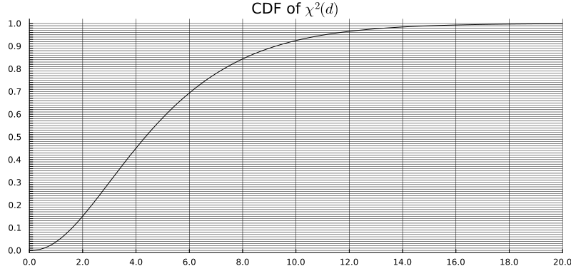

TD3 : Ajustement de loi
Exercice 0 : Jeu des \(2\sigma\)
Pour chaque distribution \(P\), calculer une approximation de l’intervalle \(2\sigma\) \([\mu - 2\sigma,\, \mu + 2\sigma]\) et indiquer si \(x_\mathrm{obs}\) se trouve à l’intérieur ou à l’extérieur. Pour les lois \(\chi^2\), \(t\) et \(F\), utiliser l’approximation gaussienne.
- \(P = \mathcal{N}(3,\, 2^2)\), \(x_\mathrm{obs} = 8\)
- \(P = \mathcal{N}(-5,\, 3^2)\), \(x_\mathrm{obs} = 0{,}5\)
- \(P = \mathcal{P}(9)\), \(x_\mathrm{obs} = 16\)
- \(P = \mathcal{P}(25)\), \(x_\mathrm{obs} = 18\)
- \(P = \mathcal{E}(2)\), \(x_\mathrm{obs} = 0{,}6\)
- \(P = \mathcal{E}(0{,}5)\), \(x_\mathrm{obs} = 3{,}5\)
- \(P = \chi^2(10)\), \(x_\mathrm{obs} = 19\)
- \(P = F(10,\, 30)\), \(x_\mathrm{obs} = 1{,}9\)
Exercice 1
On veut tester si un dé est pipé. Il est lancé \(1000\) fois et on enregistre le nombre d’apparitions de chaque face. Les données sont les suivantes :
| 1 | 2 | 3 | 4 | 5 | 6 | |
|---|---|---|---|---|---|---|
| Effectifs | 159 | 168 | 167 | 160 | 175 | 171 |
- Formuler le problème de test d’hypothèses.
- Calculer les effectifs théoriques sous \(H_0\), donner le degré de liberté \(d\) de la statistique du test du chi-deux et donner la p-valeur approchée, en utilisant la fonction de répartition de \(\chi^2(d)\) :

Exercice 2
Dans une enquête portant sur \(825\) familles ayant \(3\) enfants, le nombre de garçons a été enregistré :
\[ \begin{array}{|c|c|c|c|c|c|} \hline \text{Nombre de garçons} & 0 & 1 & 2 & 3 & \text{Total} \\ \hline \text{Nombre de familles} & 71 & 297 & 336 & 121 & 825 \\ \hline \end{array} \]
On suppose sous \(H_0\) que les sexes des enfants lors des naissances successives au sein d’une famille sont des variables catégorielles indépendantes et que la probabilité \(p\) d’avoir un garçon reste constante.
- Déterminer la loi du nombre de garçons dans une famille de 3 enfants en fonction de \(p\).
- Estimer \(p\) par un estimateur du maximum de vraisemblance.
- Tester l’adéquation à la loi obtenue à la question 1.
Exercice 3
On observe
X = [0, 1, 0, 0, 0, 0, 0, 0.5, 1, 1, 1, 0.7, 0.9, 1, 1, 1, 1, 0, 0.1, 0, 1]On suppose que les entrées de \(X\) sont i.i.d. de loi \(P\).
On considère le problème de test d’hypothèses suivant :
\(H_0\) : \(P = \mathcal{B}(0{,}5)\) (Bernoulli) \(\quad\) contre \(\quad\) \(H_1\) : \(P \neq \mathcal{B}(0{,}5)\).
- Examiner attentivement les données. Que peut-on dire des observations, de l’hypothèse d’i.i.d., de \(H_0\) et de \(H_1\) ?
- Tracer sur le même graphique la fonction de répartition d’une loi de Bernoulli \(\mathcal{B}(0{,}5)\) et la fonction de répartition empirique des données observées \(X\).
- Appliquer le test de Kolmogorov-Smirnov au niveau \(0{,}1\). Pour cela, utiliser ce tableau.
- Commenter le résultat.